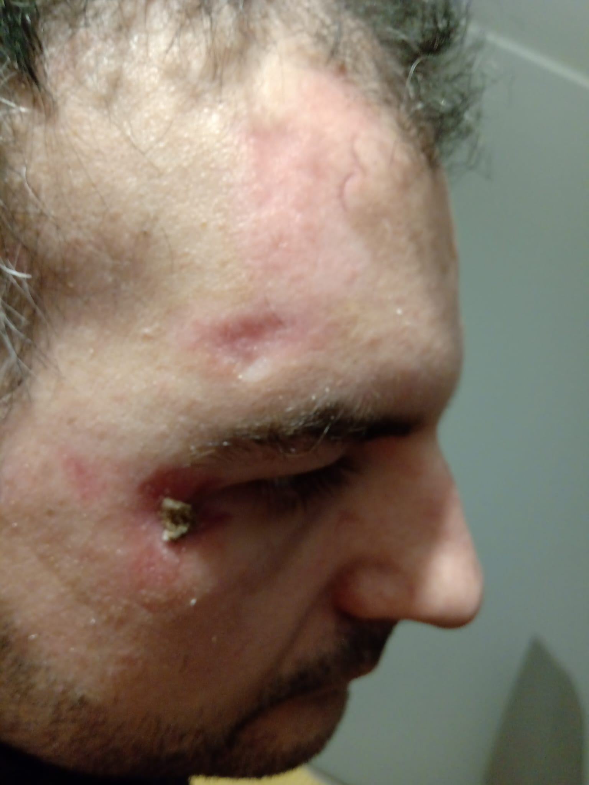
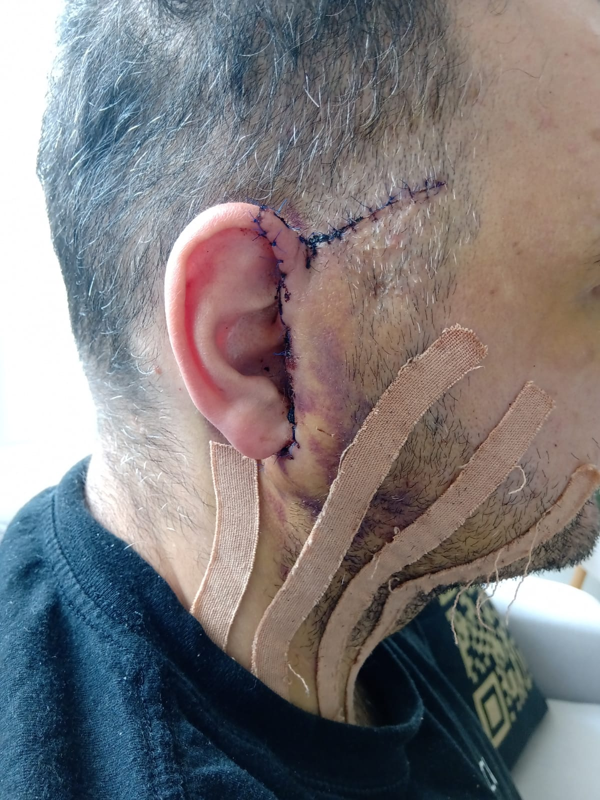
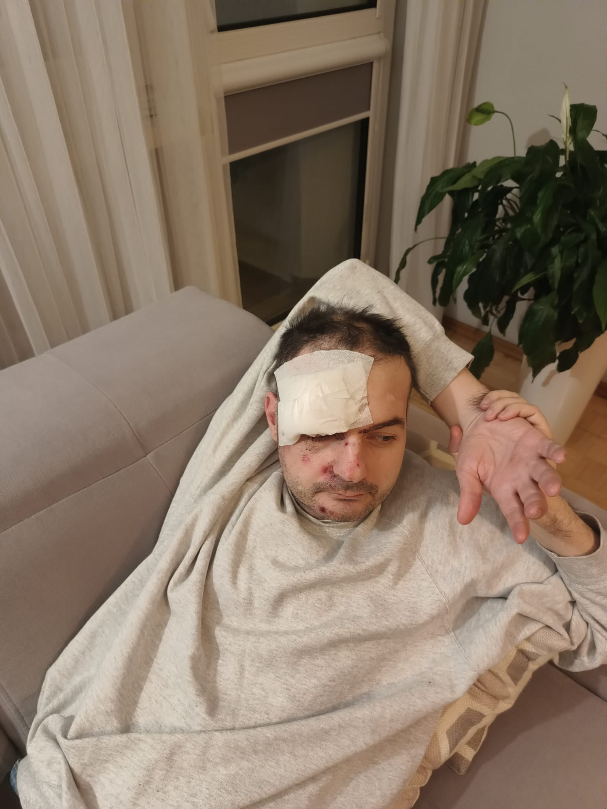
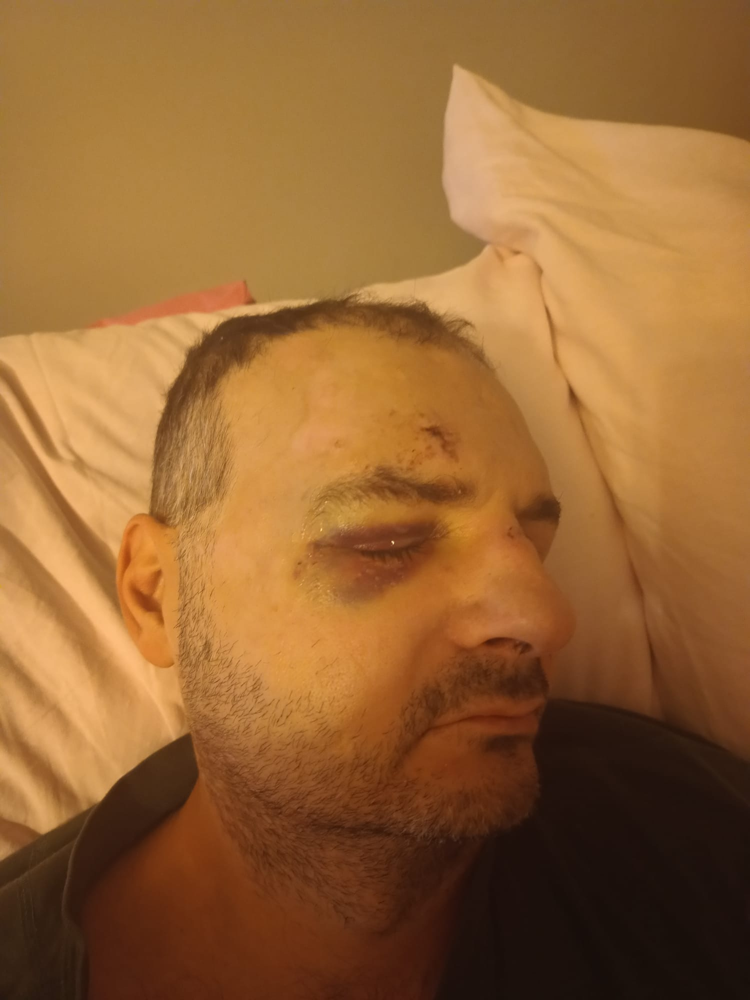
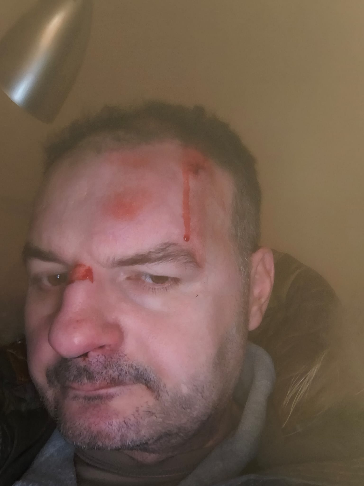

Historia Marka Marek's Story Mareks Geschichte
Marek Gadomski ma 42 lata i od lat choruje na ciężką padaczkę lekooporną. W dzieciństwie wykryto u niego guz mózgu. Przeszedł operację, później wszczepiono mu stymulator nerwu błędnego (VNS), a w 2023 roku wykonano kolejną operację. Mimo tego napady wróciły.
Ostatnie 6 lat to wyraźne pogorszenie. Marek ma liczne napady, często z nagłymi upadkami — upadek jest początkiem ataku, a nie jego skutkiem. Każde wyjście, każde przemieszczanie się, każdy zwykły dzień wymaga obecności drugiej osoby. Marek nie jest samodzielny. Stał się w dużej mierze więźniem własnego mieszkania.
Wcześniej był aktywny, miał swoje życie, znajomych, zainteresowania, funkcjonował, wyjeżdżał za granicę. Profil na Facebooku pokazuje jak wyglądało jego życie zanim choroba zaatakowała z zwielokrotnioną siłą — i krótkie chwile, gdy odpuszcza: facebook.com/Rhangdo
Marek jest dziś pod stałą, domową opieką rodziców. Jego mama ma 70 lat, ojciec ponad 80. Robią dla niego wszystko, co mogą — ale są w wieku, w którym czas ma znaczenie. To ich ostatni realny moment, żeby walczyć o leczenie syna. Jeśli się nie uda i jeśli rodziców zabraknie, Marek najpewniej nie będzie w stanie żyć samodzielnie. Realnym scenariuszem stanie się placówka opiekuńcza — dla sprawnego umysłowo dorosłego mężczyzny.
Lekarze nie pozostawiają złudzeń: konsekwencja częstotliwości ataków i niekontrolowanych upadków twarzą lub potylicą o podłoże jest prosta — każdy upadek może być ostatnim.
Marek Gadomski is 42 years old and has been suffering from severe drug-resistant epilepsy for years. A brain tumor was detected in childhood. He underwent surgery, later had a vagus nerve stimulator (VNS) implanted, and in 2023 another surgery was performed. Despite this, the seizures returned.
The last 6 years have seen a clear deterioration. Marek has numerous seizures, often with sudden falls — the fall is the beginning of the attack, not its result. Every outing, every movement, every ordinary day requires the presence of another person. Marek is not independent. He has largely become a prisoner in his own apartment.
Previously he was active, had his own life, friends, interests, traveled abroad. His Facebook profile shows what life looked like before the disease attacked with multiplied force — and the brief moments when it relents: facebook.com/Rhangdo
Today Marek is under constant home care by his parents. His mother is 70, his father over 80. They do everything they can — but they are at an age where time matters. This is their last realistic chance to fight for treatment for their son. If it doesn't work and if the parents are no longer around, Marek will most likely be unable to live independently. An assisted living facility becomes a real scenario — for a fully intellectually capable adult man.
Doctors leave no illusions: the consequence of the frequency of attacks and uncontrolled falls directly onto the face or back of the head is straightforward — every fall could be the last.
Marek Gadomski ist 42 Jahre alt und leidet seit Jahren an schwerer arzneimittelresistenter Epilepsie. In der Kindheit wurde bei ihm ein Hirntumor festgestellt. Er wurde operiert, später wurde ihm ein Vagusnervstimulator (VNS) implantiert, und 2023 wurde eine weitere Operation durchgeführt. Trotzdem kehrten die Anfälle zurück.
Die letzten 6 Jahre zeigen eine deutliche Verschlechterung. Marek hat zahlreiche Anfälle, oft mit plötzlichen Stürzen — der Sturz ist der Beginn des Anfalls, nicht seine Folge. Jeder Ausgang, jede Bewegung, jeder gewöhnliche Tag erfordert die Anwesenheit einer anderen Person. Marek ist nicht selbstständig. Er ist weitgehend ein Gefangener in seiner eigenen Wohnung geworden.
Früher war er aktiv, hatte sein eigenes Leben, Freunde, Interessen, reiste ins Ausland. Sein Facebook-Profil zeigt, wie sein Leben aussah, bevor die Krankheit mit vervielfachter Kraft angriff — und die kurzen Momente, wenn sie nachlässt: facebook.com/Rhangdo
Heute steht Marek unter ständiger häuslicher Pflege seiner Eltern. Seine Mutter ist 70 Jahre alt, sein Vater über 80. Sie tun alles, was sie können — aber sie sind in einem Alter, in dem die Zeit eine Rolle spielt. Dies ist ihre letzte realistische Chance, für die Behandlung ihres Sohnes zu kämpfen. Wenn es nicht klappt und die Eltern nicht mehr da sind, wird Marek höchstwahrscheinlich nicht selbstständig leben können. Eine Pflegeeinrichtung wird zum realen Szenario — für einen geistig vollkommen fähigen erwachsenen Mann.
Auch die Ärzte lassen keine Illusionen: Die Konsequenz der Anfallshäufigkeit und der unkontrollierten Stürze direkt auf Gesicht oder Hinterkopf ist einfach — jeder Sturz könnte der letzte sein.
Marek — kiedy choroba odpuszcza Marek — when the disease relents Marek — wenn die Krankheit nachlässt
{kind=link}
{kind=link}
Skutki napadów padaczkowych The aftermath of epileptic seizures Die Folgen epileptischer Anfälle
Poniższe zdjęcia dokumentują urazy powstałe w wyniku niekontrolowanych upadków podczas napadów. Upadek jest początkiem ataku — nie da się go przewidzieć ani zamortyzować. Każdy z tych upadków mógł zakończyć się tragicznie.
The photos below document injuries resulting from uncontrolled falls during seizures. The fall is the start of the attack — it cannot be predicted or cushioned. Any one of these falls could have been fatal.
Die folgenden Fotos dokumentieren Verletzungen, die durch unkontrollierte Stürze während der Anfälle entstanden sind. Der Sturz ist der Beginn des Anfalls — er lässt sich weder vorhersagen noch abfangen. Jeder dieser Stürze hätte tödlich enden können.
{kind=link}

Urazy po napadzie Injuries after seizure Verletzungen nach dem Anfall
{kind=link}

Urazy po napadzie Injuries after seizure Verletzungen nach dem Anfall
{kind=link}

Urazy po napadzie Injuries after seizure Verletzungen nach dem Anfall
{kind=link}

Urazy po napadzie Injuries after seizure Verletzungen nach dem Anfall
{kind=link}

Urazy po napadzie Injuries after seizure Verletzungen nach dem Anfall
Jak przeskoczyliśmy „technologiczny płotek" How we cleared the "technology hurdle" Wie wir die „technologische Hürde" überwanden
W tej historii jest jeden bardzo gorzki element, mój główny motywator do działania. Przez długi czas problemem nie była tylko medycyna ani nawet pieniądze. Problemem była technologia.
Ojciec Marka, Edward, całe życie pracował technicznie. Jest człowiekiem konkretnym i zaradnym — ale dzisiejsza komunikacja medyczna z zagraniczną kliniką wymaga zupełnie innych narzędzi: maila, formularzy internetowych, angielskiego, tłumaczeń, umiejętności znalezienia właściwego kontaktu. Dla mnie to codzienność. Dla niego — mur, który skutecznie powstrzymał działania na kilka miesięcy.
Mój ojciec i ojciec Marka pracują razem. Temat choroby był nam znany, ale detale — niekoniecznie. Do czasu! Dostałem przez ojca odręczne notatki i papierowy list do wysłania do kliniki w Brnie z prośbą o konsultację. Tak — w 2026 roku papierowy list do przetłumaczenia.
Uporządkowałem dokumenty, przetłumaczyłem je na angielski i czeski, przygotowałem wiadomości i pomogłem skontaktować się z ośrodkiem. To, co dla mnie było pracą przy komputerze, dla rodziny Marka było ogromną barierą.
Brno Epilepsy Center odpowiedziało w ciągu dwóch dni. Zadeklarowało gotowość zajęcia się przypadkiem Marka. Pojawiła się realna ścieżka dalszej diagnostyki i leczenia.
There is one very bitter element to this story — my main motivator for action. For a long time the problem was not only medicine or even money. The problem was technology.
Marek's father, Edward, worked in a technical field his whole life. He is a concrete, resourceful man — but today's medical communication with a foreign clinic requires entirely different tools: email, web forms, English, translations, finding the right contact. For me this is everyday life. For him — a wall that effectively stopped action for several months.
My father and Marek's father work together. The topic of Marek's illness was known to us, but the details — not so much. Until now! Via my father I received handwritten notes and a paper letter to be sent to a clinic in Brno requesting a medical consultation. Yes — in 2026, a paper letter to translate.
I organized the documents, translated them into English and Czech, prepared messages and helped establish contact with the center. What was background computer work for me had previously been an enormous barrier for Marek's family.
Brno Epilepsy Center responded within two days. It declared readiness to handle Marek's case. A real path for further diagnostics and treatment emerged.
Es gibt ein sehr bitteres Element in dieser Geschichte — meinen Hauptmotivator zum Handeln. Lange Zeit war das Problem nicht nur die Medizin oder gar das Geld. Das Problem war Technologie.
Mareks Vater, Edward, hat sein ganzes Leben in einem technischen Bereich gearbeitet. Er ist ein konkreter, einfallsreicher Mann — aber die heutige medizinische Kommunikation mit einer ausländischen Klinik erfordert völlig andere Werkzeuge: E-Mail, Webformulare, Englisch, Übersetzungen, den richtigen Kontakt finden. Für mich ist das Alltag. Für ihn — eine Mauer, die Aktionen für mehrere Monate effektiv gestoppt hat.
Mein Vater und Mareks Vater arbeiten zusammen. Das Thema von Mareks Krankheit war uns bekannt, aber die Details — nicht so sehr. Bis jetzt! Über meinen Vater erhielt ich handgeschriebene Notizen und einen Papierbrief, der an eine Klinik in Brünn mit der Bitte um medizinische Beratung geschickt werden sollte. Ja — im Jahr 2026 einen Papierbrief zum Übersetzen.
Ich ordnete die Dokumente, übersetzte sie ins Englische und Tschechische, bereitete Nachrichten vor und half, den Kontakt mit dem Zentrum herzustellen. Was für mich Hintergrundarbeit am Computer war, war für Mareks Familie zuvor eine enorme Hürde.
Das Brünn Epilepsiezentrum antwortete innerhalb von zwei Tagen. Es erklärte die Bereitschaft, Mareks Fall zu übernehmen. Ein echter Weg für weitere Diagnostik und Behandlung eröffnete sich.
Koszty leczenia Treatment Costs Behandlungskosten
Koszty diagnostyki, hospitalizacji i ewentualnego leczenia w Czechach są bardzo wysokie. Rodzina przeznacza całość dostępnych oszczędności, ale skala kosztów przekracza to, co są w stanie samodzielnie udźwignąć.
The costs of diagnostics, hospitalization, and possible treatment in the Czech Republic are very high. The family is dedicating all their available savings, but the scale of costs exceeds what they are able to bear on their own.
Die Kosten für Diagnostik, Krankenhausaufenthalt und mögliche Behandlung in der Tschechischen Republik sind sehr hoch. Die Familie widmet alle verfügbaren Ersparnisse, aber die Größenordnung der Kosten übersteigt, was sie alleine tragen können.
| Pozycja Item Posten | EUR | CZK | PLN |
|---|---|---|---|
| Całkowite koszty hospitalizacji (wycena Brno) Total hospitalization costs (Brno estimate) Gesamtkosten Krankenhausaufenthalt (Brünn-Schätzung) | 50 000 | 1 245 000 | 217 000 |
| Przedpłata na zabieg i hospitalizację Prepayment for procedure & hospitalization Vorauszahlung für Eingriff & Krankenhausaufenthalt | 10 800 | 270 000 | 47 000 |
| Zakwaterowanie rodziców (2–3 tygodnie, szacunek) Parents' accommodation (2–3 weeks, estimate) Unterkunft der Eltern (2–3 Wochen, Schätzung) | — | — | do ustalenia TBD offen |
| Cel zbiórki Fundraising goal Spendenziel | 50 000 | 1 245 000 | 217 000 |
Rodzina deklaruje pełną transparentność. Każdy większy koszt będzie możliwy do rozliczenia rachunkiem, fakturą lub potwierdzeniem płatności. The family declares full transparency. Every major cost will be verifiable with a receipt, invoice, or payment confirmation. Die Familie erklärt volle Transparenz. Jede größere Ausgabe ist mit Quittung, Rechnung oder Zahlungsnachweis nachvollziehbar.
Proszę o pomoc Please help Bitte helfen Sie
Wszyscy zdajemy sobie sprawę z tego, że Marek nie jest ślicznym rumianym bobsem, na widok którego same otwierają się portfele. Jest dorosłym człowiekiem ze swoją historią i godnym życiem przed chorobą. To nie zmienia faktu, że potrzebuje pomocy teraz — i że czas naprawdę gra tutaj rolę. We all realize that Marek is not a cute, rosy baby at the sight of whom wallets open by themselves. He is an adult with his own history and a dignified life before the illness. That doesn't change the fact that he needs help now — and that time truly matters here. Wir alle wissen, dass Marek kein süßes, rosiges Baby ist, bei dessen Anblick sich Geldbörsen von selbst öffnen. Er ist ein Erwachsener mit seiner eigenen Geschichte und einem würdigen Leben vor der Krankheit. Das ändert nichts daran, dass er jetzt Hilfe braucht — und dass die Zeit hier wirklich eine Rolle spielt.
Wpłać lub udostępnij. Każda złotówka i każde udostępnienie ma znaczenie. Donate or share. Every coin and every share matters. Spenden oder teilen. Jeder Cent und jedes Teilen zählt.
Wpłać na zrzutka.pl Donate via zrzutka.pl Spenden via zrzutka.plzrzutka.pl/4y66vs